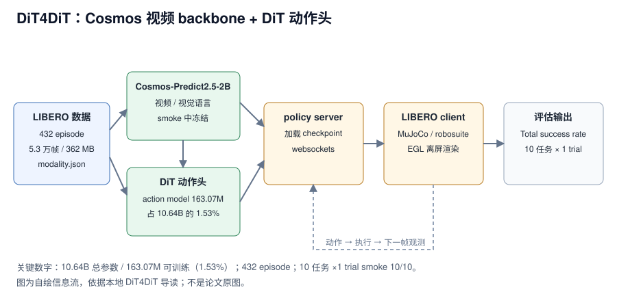

DiT4DiT 在本地章节里被拆成一条可验证的工程链：Cosmos-Predict2.5-2B 提供视频/视觉语言条件，DiT 风格动作头预测未来一段连续动作，policy server 把动作发给 LIBERO 仿真 client。章节用单卡 L40 做了两项 smoke：libero_spatial 10 个任务 × 1 次 rollout 得到 10/10；训练只跑 2 个 optimization step、batch 1。模型总参数 10,641,307,643（10.64B），其中可训练 163,073,544（1.53%），其余 10,478,234,099 被冻结。10/10 只证明链路，不是正式成功率；章节没有给论文级训练配方、延迟或完整 benchmark。
来源约定：本文事实只取自本仓库 DiT4DiT-LIBERO 训练与评估导读，没有用模型记忆补写论文方法、arXiv 编号或未出现的代码路径。
标注约定：【章节】指本地章节给出的配置、日志或结论；【实测】指章节在本机 L40 上跑出的日志数字；【公开】指公开入口，未在本地章节核验。
版本：章节未给论文版本、arXiv、代码 commit 与教程日期；查阅日期 2026-11-01。
1. 论文与官方资源
| 资源 | 入口 | 阅读用途 |
|---|---|---|
| 论文 | 章节未给（无标题、arXiv、版本） | — |
| 源码 | 章节未给 GitHub 地址；本地仓库 DiT4DiT/，入口 DiT4DiT/training/train.py | 训练入口、配置覆盖与 DeepSpeed |
| 权重 | mondo-robotics/dit4dit-model（策略 checkpoint）；nvidia/Cosmos-Predict2.5-2B（gated backbone） | 评估加载与训练初始化 |
| 项目页 | 章节提到“官方项目页 / 论文方法图”，未给 URL | 方法总览图见 assets/official_images/pipeline.jpg |
| 数据集 | IPEC-COMMUNITY/libero_spatial_no_noops_1.0.0_lerobot | 432 episode、约 5.3 万帧、约 362 MB |
论文题目、arXiv、项目页 URL 与代码 commit 章节均未给；本文不补写。mondo-robotics/dit4dit-model 在章节里是 HF 模型仓库（checkpoint），不是 GitHub 源码仓库；源码只有本地 DiT4DiT/ 路径。权重仓库与数据集的 HF 地址来自章节命令，属于章节记录，不是外部核验。
版本提示：本章是“最小可复现流程”，不是论文复现报告。它只跑一个 suite、一个 checkpoint、2 个训练 step；所有数字都带“smoke”口径，不能与论文表格横比。
2. 核心问题：把 10B 级策略拆成可检查的工程链
一句话：章节不回答“DiT4DiT 有多强”，而回答“在单卡、单 suite、有限磁盘上，如何把视频 backbone、动作扩散头、policy server 与 LIBERO 仿真连起来，并知道每一步是否真的跑通”。【章节】

图 1：DiT4DiT 的数据、Cosmos backbone、DiT 动作头与 LIBERO 评估回路。自绘，依据本地导读；不是论文原图。
对比主流路径：论文级多卡完整训练 → 教学级“冻结 backbone、只训动作头”的 smoke。
- 节省了什么：只下载一个 suite（362 MB）；冻结
backbone_interface后只训 1.53% 参数；2 step、batch 1，不保存中间 checkpoint。 - 保留了什么：Cosmos 视频/视觉语言条件、DiT 动作头、真实 LIBERO 数据与 policy server ↔ client 的 websocket 协议。
- 代价是什么：10/10 是 10 次 rollout 的 smoke，不是 suite 成功率；2 step 的 loss 没有收敛含义；
final_model接近 20 GB，不清理会撑爆数据盘。 - 读者该学什么：把“大模型复现”拆成有成功信号的检查点；先证明数据、显存、反传、仿真各自能跑，再谈放大训练。
3. 模型结构与张量流
3.1 组件与职责
| 组件 | 章节描述 | 本章状态 |
|---|---|---|
| Cosmos-Predict2.5-2B | 视频/视觉语言 backbone，提取图像与语言条件 | gated；smoke 中通过 freeze_modules=backbone_interface 冻结 |
| DiT 动作头 | diffusion transformer 风格，预测未来一段连续动作序列 | action model 相关参数 163,073,544 可训练 |
| tri-timestep | 视频模型时间步、动作扩散去噪时间步、机器人真实控制时间三套时间 | 章节只给机制图，未给公式与采样步数 |
| policy server | 加载 checkpoint，接收观测并返回动作 | 与 LIBERO client 通过 websockets 通信 |
| LIBERO client | MuJoCo / robosuite 仿真，执行动作并统计成功 | 单 suite libero_spatial |
章节把名字拆成两层：第一个 DiT 指扩散式动作生成，第二个 DiT 指把视频/语言 backbone 与动作头接起来的整体策略框架。评估时不是输出一句文本，而是输出机械臂下一段连续控制量。【章节】
3.2 输入与 modality.json 字段映射
章节使用的 HF 数据集是 LeRobot v2.1，原始 meta/ 没有 DiT4DiT dataloader 期望的 meta/modality.json；必须补一个字段映射，把 observation.state 与 action 向量拆成抽象字段。这不是新数据，而是告诉 dataloader 如何解释已有列。
| 抽象字段 | 原始 key | 切片 | absolute |
|---|---|---|---|
state.x / y / z | observation.state | 0:1 / 1:2 / 2:3 | true |
state.gripper | observation.state | 7:8 | true |
action.x / y / z | action | 0:1 / 1:2 / 2:3 | false |
action.gripper | action | 6:7 | false |
video.primary_image | observation.images.image | — | — |
video.wrist_image | observation.images.wrist_image | — | — |
annotation.human.action.task_description | task_index | — | — |
示例只映射了 x/y/z 与 gripper，state 的 3–6 维和 action 的 3–5 维没有出现在映射里；章节没有解释这些维度是什么，换数据集时要自己确认，不能照抄切片。
3.3 参数账本与损失组成
章节训练日志给出 10.64B 参数的分账：
$$
10{,}641{,}307{,}643 = 163{,}073{,}544\ (\text{trainable}) + 10{,}478{,}234{,}099\ (\text{frozen})
$$
可训练比例 1.53%，说明 smoke 并没有微调整个模型，而是只训练 action model 相关参数；优化器状态只覆盖这部分参数，但冻结权重仍要占显存。
日志里的 loss 由两项组成：
$$
\text{total_loss} = \text{action_dit_loss} + \text{future_video_loss_scaled}
$$
两次 step 的 future_video_loss_scaled 都是 0.0，所以 total_loss 与 action_dit_loss 数值相同。章节没有解释 scaled 项为什么为 0，也没有给视频损失的权重；这只能当作本次 smoke 的观察，不能推断完整训练的损失设计。
4. 实验结果
4.1 LIBERO spatial 评估 smoke
协议：libero_spatial 共 10 个任务，每个任务 1 次 rollout，总共 10 个 episode；单卡 GPU 0；checkpoint 为 dit4dit_libero/final_model/pytorch_model.pt。
| 项目 | 章节值 |
|---|---|
| suite | libero_spatial |
| 任务数 | 10 |
| trials / task | 1 |
| 总 episode | 10 |
| 成功数 | 10 |
Total success rate | 1.0（100%） |
| 正式评估建议 | trials per task 改为 50 |
日志末尾是 # successes: 10 (100.0%)、Total success rate: 1.0、Total episodes: 10。读法：这是 10 次 rollout 的全胜，不是 10 个任务各 50 次的 suite 成功率；它只能支持“checkpoint 能加载、server 能连、仿真能执行、成功计数能工作”。评估结束时的 EGL_NOT_INITIALIZED 是 robosuite/EGL 析构 warning，只要前面已打印 Total success rate 与 Total episodes，评估本身已完成。
4.2 训练 smoke 日志
| 检查点 | 章节日志 | 说明 |
|---|---|---|
| 总参数 | 10,641,307,643（10641.308M） | 10.64B |
| 可训练参数 | 163,073,544（163.074M） | 1.53% |
| 冻结参数 | 10,478,234,099（10478.234M） | backbone 等 |
| 优化步数 / batch | 2 / 1 | 2 与 1 是脚本参数 |
| dataloader 长度 | 52,970 | 数据集被正确索引 |
| Step 1 | action 0.005973855；future 0.009470177；scaled 0.0；total 0.005973855 | 链路跑通 |
| Step 2 | action 2.472470999；future 0.004216374；scaled 0.0；total 2.472470999 | loss 波动无收敛含义 |
| 结束 | Training complete. Final model saved ... | 主循环正常退出 |
读法：Step 1 到 Step 2 的 loss 从 0.006 跳到 2.47，不能说明模型变差或变好；2 个 step、batch 1 只验证 dataloader、forward、backward、optimizer step 与保存链路。不要把这次 checkpoint 拿去做正式评估。
来源：本地章节“六、跑通 LIBERO 评估”“七、跑通 2 step 训练 smoke test”。
5. 值得借鉴的设计与取舍
章节没有消融表；它给的是一组教学取舍，收益与损失都写在流程里，不能当成作者消融结论。
- 冻结 backbone、只训动作头：
freeze_modules=backbone_interface把可训练参数压到 1.53%，让单卡 smoke 成为可能。代价是完全没有验证 Cosmos 表征是否适配 LIBERO；要做适配实验，必须解冻并显式记录显存与步数。 - 只跑一个 suite：
data_mix=libero_spatial_only避免下载四个 LIBERO 数据集，362 MB 就能验证 dataloader。代价是libero_object、libero_goal、libero_10完全没覆盖，不能外推。 - 不存中间 checkpoint：
save_interval=999999、eval_interval=999999避免每个保存点写接近 20 GB 的final_model。代价是 smoke 没有模型选择，也没有训练中评测。 - W&B offline：
WANDB_MODE=offline让曲线只落本地，不要求在线账号。代价是多机实验需要自己汇总。 - 2 step、batch 1：只证明反传与 DeepSpeed 初始化，不证明学习。章节明确要求不要用这 2 step 的 loss 判断效果。
读者该不该复用：如果目标是“先摸清工程链路”，这套冻结 + 单 suite + 2 step 的顺序非常值得复用；如果目标是“复现论文指标”，它缺数据规模、步数、学习率、多卡配置与评测 trials，必须继续补。
来源：本地章节“七、跑通 2 step 训练 smoke test”“十二、下一步可以怎么扩展”。
6. 延迟与显存怎么读
章节没有给模型延迟、吞吐或完整请求延迟，只给了显存门槛、磁盘占用与单卡硬件。因此不能用 10.64B 参数量推算推理速度，也不能用 1000 / 延迟 计算策略调用频率。
| 项目 | 章节值 | 口径 |
|---|---|---|
| 训练/评估 GPU | 单卡 NVIDIA L40 | 本章实测环境 |
| 建议显存 | 至少 48 GB | 单卡评估与 smoke training |
| 24 GB 显卡 | RTX 4090 可能跑通部分流程，但更容易 OOM | 章节经验 |
单个 final_model/pytorch_model.pt | 接近 20 GB | 训练结束保存的完整权重 |
| LIBERO spatial 数据 | 362 MB | 下载后目录占用 |
| 清理后日志 / 结果 | 96 K / 76 K | 删除 final_model 后 |
| 模型前向延迟 | 章节未给 | 需本机测 |
| 完整请求延迟 | 章节未给 | 含 policy server ↔ client websocket |
| 动作 horizon / 重规划间隔 | 章节未给 | 无法把 chunk 换算成秒 |
测量协议章节未给：输入是否已在 GPU、热身次数、重复次数、取中位数、显存统计方式都没有。真要报告，至少分开记录模型前向、policy server 请求（含序列化与 websockets）与 LIBERO 单步仿真时间；1000 / 延迟 只说明策略调用频率，不等于动作执行频率。
来源：本地章节“三、服务器和目录规划”“八、为什么训练结束后要删除 final_model”。
7. 训练资源与卡数
| 训练项目 | 章节值 |
|---|---|
| 硬件 | 单卡 NVIDIA L40 |
| 分布式启动 | accelerate launch，--num_processes 1 |
| DeepSpeed | DiT4DiT/config/deepseeds/deepspeed_zero2.yaml |
| 优化器步数 | 2（smoke）；完整训练步数章节未给 |
| 每设备 batch | 1 |
| 梯度累积 | 章节未给 |
| 有效 batch | 1（未给累积，不能反推更大 batch） |
| 学习率 / warmup / EMA | 章节未给 |
| 冻结模块 | backbone_interface |
| 保存 / 评测间隔 | 999999 / 999999 |
| 精度 | 章节未给 |
| W&B | offline |
| 数据混合 | libero_spatial_only |
章节没有给 GPU 数、microbatch 与累积步数，无法用 B_eff = N_GPU × B_micro × N_accum 反推有效 batch；per_device_batch_size=1 就是本次 smoke 的全部 batch。官方脚本默认面向多卡训练，但具体卡数、步数与学习率章节未给，不能按 L40 单卡结果推算完整训练时间。
三级复现：
- 理解与评测：下载 checkpoint 与 Cosmos backbone，起 policy server + LIBERO client，先跑
trials per task=1的 smoke。 - 训练链路：补
modality.json，用libero_spatial_only跑 2 step、batch 1，确认Step 1、Step 2、Training complete。 - 完整训练：章节没有配方，不能声称可复现论文训练；只能按官方脚本逐步加数据、batch、步数与卡数，并记录真实硬件。
来源：本地章节“七、跑通 2 step 训练 smoke test”“十二、下一步可以怎么扩展”。
8. 代码阅读顺序
| 顺序 | 路径 | 阅读重点 |
|---|---|---|
| 1 | DiT4DiT/training/train.py | 训练入口；--datasets.vla_data.*、--trainer.* 覆盖逻辑 |
| 2 | DiT4DiT/config/deepseeds/deepspeed_zero2.yaml | DeepSpeed ZeRO-2 配置；smoke 只跑 1 进程 |
| 3 | scripts/run_libero_one_suite.sh | 评估封装：checkpoint、suite、trials、GPU id 四个参数 |
| 4 | assets/logs/run_train_smoke_libero_spatial.sh | 归档的 smoke 脚本；环境变量、accelerate 参数与清理逻辑 |
| 5 | meta/modality.json | 字段映射；state/action 切片与 absolute 标志 |
| 6 | _finalize_training() | 训练结束保存完整 final_model；约 20 GB |
| 7 | assets/dit4dit_architecture.svg、assets/official_images/pipeline.jpg、tri_timestep.png | 复刻链路图、官方方法图与 tri-timestep 机制 |
| 8 | assets/logs/*.log | 评估、server 与训练日志；成功信号与报错对照 |
坑（章节明确给出）：
- 数据集缺
meta/modality.json时 dataloader 起不来；补映射不是补数据。 - Cosmos 下载后检查
.incomplete文件；残留会导致 shard 缺失或 safetensors 读取错误。 - 403
not in the authorized list是没同意 gated 许可，不是网络问题。 - LIBERO 环境常用 Python 3.8，遇到
list[int]/np.ndarray | float注解错误时在文件顶部加from __future__ import annotations。 pytorch3d顶层导入会触发编译；LIBERO 路径没用到旋转转换，可改成懒加载。- 老版本
websockets可能不认ping_interval参数，需要兼容写法。 save_interval=999999是 smoke 专用；正式训练要改回来，否则没有中间 checkpoint。final_model接近 20 GB；不设KEEP_FINAL_MODEL=1时 smoke 脚本会删除它。
9. 从 checkpoint 开始复现
以下命令来自章节，未在本机验证；路径按自己的挂载盘替换。
9.1 磁盘、环境与 token
# 模型/环境放共享盘，数据/日志放数据盘；至少准备 48GB 显存
mkdir -p /root/.secrets && chmod 700 /root/.secrets
cat > /root/.secrets/codex_tokens.env <<'EOF'
export HF_TOKEN=hf_xxx
export HUGGING_FACE_HUB_TOKEN="$HF_TOKEN"
EOF
chmod 600 /root/.secrets/codex_tokens.env
source /root/.secrets/codex_tokens.env9.2 下载模型与一个 suite
huggingface-cli download mondo-robotics/dit4dit-model \
--local-dir "$MODELS/dit4dit-model"
huggingface-cli download nvidia/Cosmos-Predict2.5-2B \
--local-dir "$MODELS/Cosmos-Predict2.5-2B"
find "$MODELS/Cosmos-Predict2.5-2B" -name '*.incomplete' | wc -l
huggingface-cli download IPEC-COMMUNITY/libero_spatial_no_noops_1.0.0_lerobot \
--repo-type dataset --local-dir "$DATA/libero_spatial_no_noops_1.0.0_lerobot"9.3 评估 smoke
scripts/run_libero_one_suite.sh \
"$MODELS/dit4dit-model/dit4dit_libero/final_model/pytorch_model.pt" \
libero_spatial 1 0成功信号：server.log 出现 server running 与 connection open；eval_libero_spatial.log 出现 Success: True/False，最后打印 Total success rate 与 Total episodes。
9.4 补元数据后跑 2 step 训练
# 先把 §3.2 的 modality.json 放进数据集 meta/
run_train_smoke_libero_spatial.sh 2 1成功信号：Total optimization steps = 2、len(vla_train_dataloader) = 52970、Step 1、Step 2、Training complete。正式评估把 trials 改成 50；正式训练要重设 save_interval、eval_interval、batch 与步数，这些值章节未给。
10. 如何用到自己的项目
可复用的是“视频/语言 backbone + 轻量动作头 + policy server 解耦”的工程结构，以及“先 smoke 再放大”的复现顺序；不是 10.64B 这个具体规模。
- 冻结 backbone 的迁移：把 Cosmos 换成自己的视频/视觉 backbone，只训动作头，先测显存、可训练比例与单 suite 成功率；代价是要重新对齐特征维度与
backbone_interface，且冻结可能限制适配。 - 跨数据集字段映射：照
modality.json的写法把新数据集的 state/action/video 映射成抽象字段，先跑 dataloader 长度检查，再训练；代价是切片与absolute标志写错会静默产生错误监督。 - smoke 检查点协议：把“环境 → 数据 → server/client → 1 step 反传 → 保存”做成固定清单，每次换机器先跑一遍；代价是要维护脚本与日志，但排障成本远低于直接长训练。